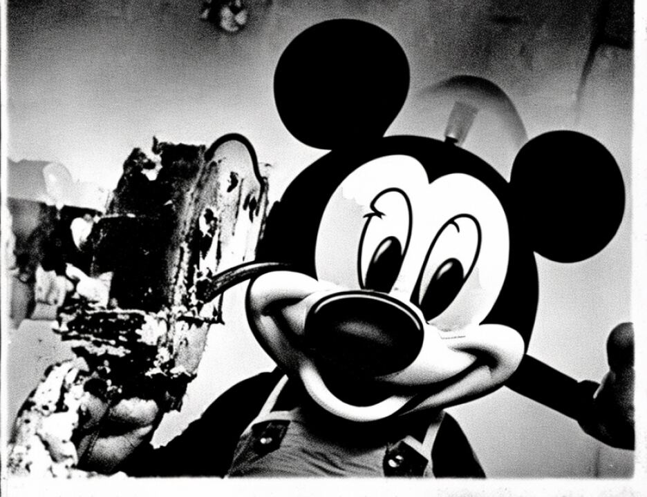

13 HON. LEONARD B. SAND,
14 District Judge
15
16
17
18
19
20
21
22
23
24
25
6257
1 APPEARANCES
2 MARY JO WHITE
United States Attorney for the
3 Southern District of New York
BY: PATRICK FITZGERALD
4 KENNETH KARAS
PAUL BUTLER
5 Assistant United States Attorneys
6
ANTHONY L. RICCO
7 EDWARD D. WILFORD
CARL J. HERMAN
8 SANDRA A. BABCOCK
Attorneys for defendant Mohamed Sadeek Odeh
9
FREDRICK H. COHN
10 DAVID P. BAUGH
LAURA GASIOROWSKI
11 Attorneys for defendant Mohamed Rashed Daoud Al-'Owhali
12 DAVID STERN
DAVID RUHNKE
13 Attorneys for defendant Khalfan Khamis Mohamed
14
SAM A. SCHMIDT
15 JOSHUA DRATEL
KRISTIAN K. LARSEN
16 Attorneys for defendant Wadih El Hage
17
18
19
20
21
22
23
24
25
6258
1 (Deliberations resumed)
2 (Time noted, 4:10 p.m.; jury not present)
3 THE COURT: The note from the jury reads: "The jury
4 appreciates the court's continued efforts to provide us the
2